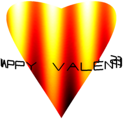

Happy Valentines day to all Chebfun2 users! Copy and paste this M-file into your Matlab to watch the love movie.
d = [0 1 0 4*pi]; t = chebfun2(@(t,th) t, d); th = chebfun2(@(t,th) th, d);
Parametric surface:
X = sin(pi*t).*cos(th/2); Y = 0.7*sin(pi*t).*sin(th/2); Z = (t-1).*(-49+50*t+30*t.*cos(th)+cos(2*th))./(-25+(cos(th)).^2);
Color scheme:
C = sin(10*X).*cos((Y-.1).^2)+(Z+1);
% Message:
S = scribble('Happy Valentines Day!');
Generate surface:
surf(X, Y, Z, C), hold on
% Add text:
plot3(1.1*cos(2.5*real(S+1)), 0.8*sin(real(2.5*(S+1))),...
1.5*imag(S)-1.05, 'k', 'jumpline', '', 'linewidth', 2), hold off
% Make it pretty:
axis tight off image
colormap hot
set(gcf, 'color', 'w')
view(180, 6)
% Rotate:
% M = [];
TA = linspace(-1.25, 3, 500);
for ta = TA
view(180*ta, 6)
axis([-1.1 1.1 -1.1 1.1 -2 .1333])
drawnow
% M = [M getframe()];
end

If you would like to save this love movie to a GIF file then uncomment the lines below (and the lines beginning M = ...) and run the example.
% % Save to .gif: % [ignored, idx] = min(abs(TA-.75)); % for j = 1:idx-1 % im = frame2im(M(j)); % [imind, cm] = rgb2ind(im, 16); % if ( j == 1 ) % imwrite(imind, cm, 'ValentinesDay.gif', 'gif', ... % 'Loopcount', inf, 'DelayTime', 1e-5); % else % imwrite(imind, cm, 'ValentinesDay.gif', 'gif', ... % 'WriteMode', 'append', 'DelayTime', 1e-5); % end % end
Reference
- Anonymous, 14th February 2013, Chebfun Example fun/ValentinesDay